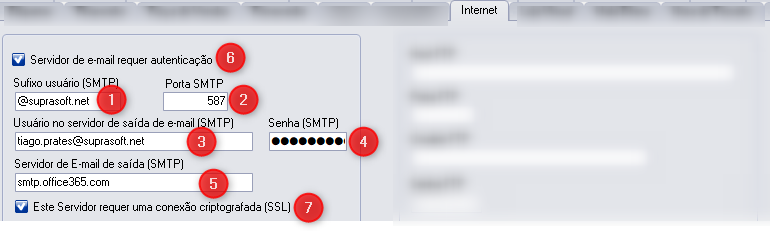
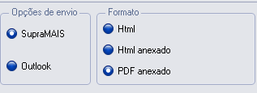

Conceito
- O que é? E-mail utilizado para envio de notas fiscais, boletos, pedidos, propostas, ordem de compra e correspondências do sistema.
- Importante: a configuração de e-mail utilizada pelo Supra é semelhante a POP3.
- Onde habilita? E-mail padrão em Ferramentas > configuração de parâmetros > aba Internet.
- Como funciona? Após configurar no parâmetro Internet, configurar também:
- Parâmetro Nota Fiscal > E-mail
- Parâmetro Financeiro > Contas a Receber > E-mail

Campos principais
- Sufixo do E-mail: domínio do e-mail do cliente.
- Porta SMTP: porta de conexão com o provedor (normalmente 465 ou 587).
- Usuário SMTP: e-mail padrão do cliente.
- Senha SMTP: senha do e-mail padrão.
- Servidor SMTP saída: servidor SMTP do provedor (informado pelo cliente/provedor).
- Servidor de autenticação TLS: segurança usada pela maioria dos provedores atualmente.
- Servidor de Criptografia SSL: segurança opcional; quando usado, normalmente a porta é 465.
Curiosidades
- O e-mail configurado no parâmetro Internet é o padrão de todo o sistema. Assim, todos os demais e-mails configurados (nota, financeiro, vendedor/comprador etc.) obrigatoriamente devem ser do mesmo sufixo.
- Dar preferência para opção SupraMAIS e formato PDF. (HTML atualmente não é mais utilizado.)
- Provedores mais novos (Gmail/Microsoft) podem exigir configuração adicional.
